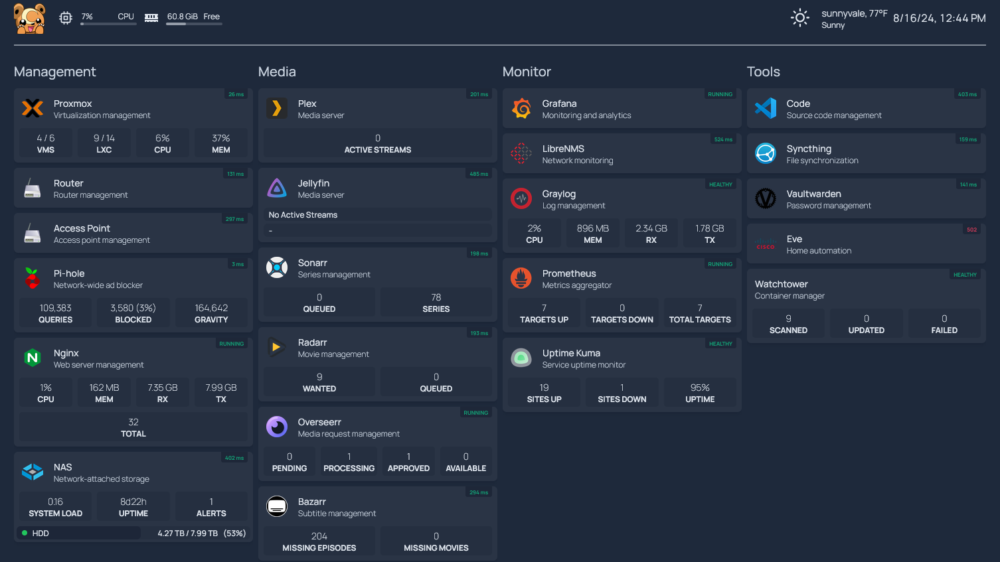
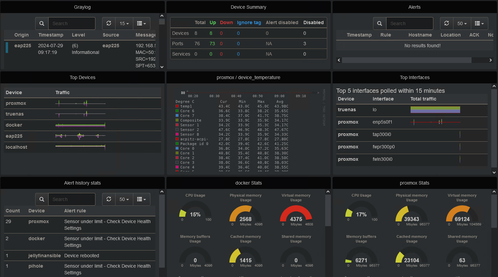
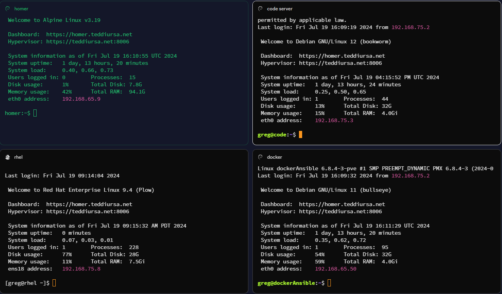
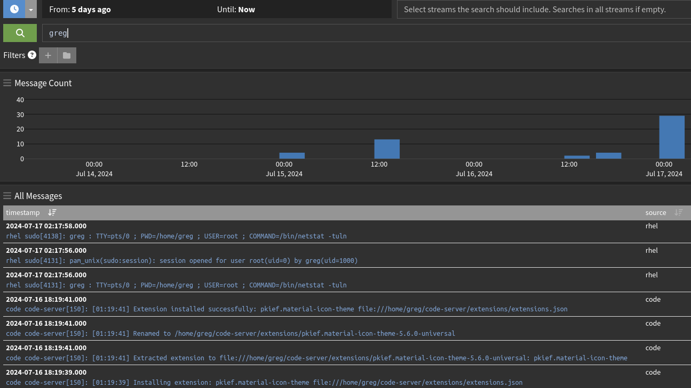
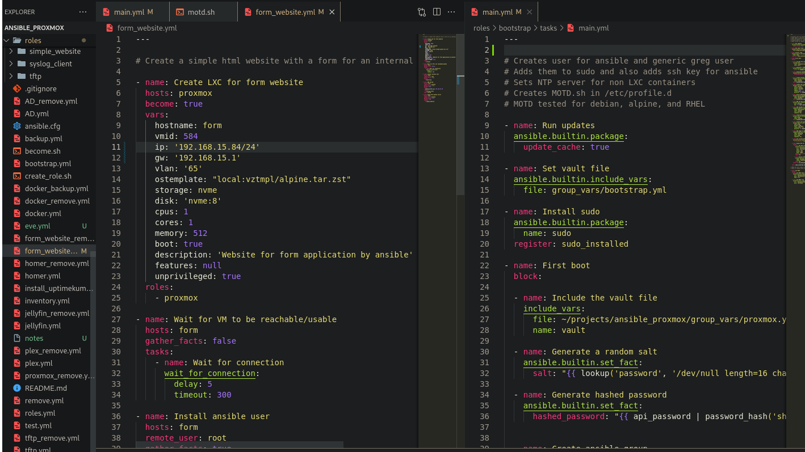
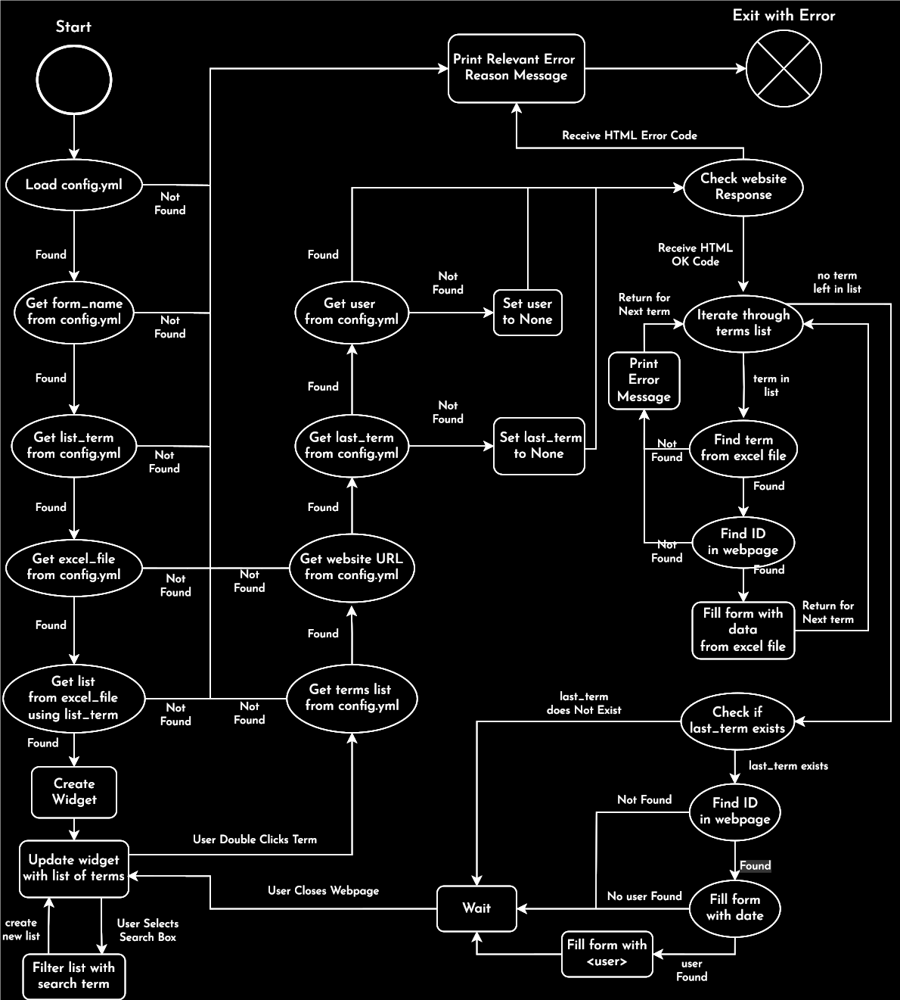
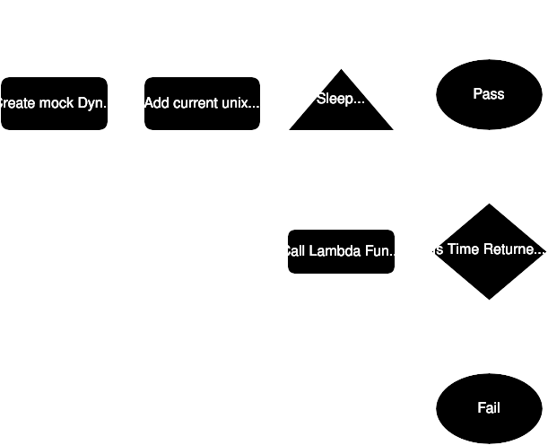

Summary
Accomplished IT professional with a Bachelor's degree in Networking and Digital Technology, bolstered by over four years of hands-on experience in technical support. Proficient in supporting network and security systems, developing web applications, and swiftly resolving intricate technical challenges. Adept at leading teams and executing disaster recovery strategies. Holds certifications in CCNA, JNCIA, AWS, and Azure.
Technical Skills
Cisco CCNA: Proficient in configuring and maintaining Cisco network devices
Python, Terraform, Ansible, and Powershell: Skilled in scripting and automation
Routing and Switching: Experienced in network design and troubleshooting
Juniper JNCIA: Familiar with Juniper networking solutions
Linux Administration: Competent in managing Linux systems
Troubleshooting: Adept at diagnosing and resolving complex technical issues
Cloud (AWS & Azure): Familiar with provisioning cloud services and architecture
Web Development: Proficient using HTML, CSS, and JavaScript
Azure Administration:Proficient in Azure Administration
Network Monitoring: Capable of ensuring network performance and security
Work Experience
Computacenter
Customer Engineer
August 2023 - Present
Oversee network and system stability at Mercedes-Benz R&D's Sunnyvale offices and data center.
Monitor network infrastructure using SNMP and ServiceNow, with expertise in OSPF, VLANs, VRRP, and STP.
Conduct maintenance and testing on Cisco and Fortigate devices to ensure optimal performance.
Collaborate with a global network team to troubleshoot and maintain operational continuity during network upgrades and maintenance.
Vivotek
Technical Support Engineer
April 2019 - August 2023
Diagnosed and resolved critical issues with networking cameras, servers, and software.
Acted as interim leader and Tier 2 support during a leadership transition, ensuring uninterrupted operations.
Led the creation of documentation during the transition to Zendesk, reducing customer tickets by up to 50%.
Managed a Windows-based demo server with automated backups.
Projects
gregchow.net
GitHub Repository

- Web Development: HTML, CSS, and Javascript
- Automation: Terraform
- Cloud Engineering: AWS S3, DynamoDB, Lambda, and Cloudfront
- Coding: Python
This project is fully automated with Terraform for easy provisioning and destruction of AWS resources along with a custom error page. Files are hosted in an AWS S3 bucket and delivered via Cloudfront. It uses Lambda functions, API gateways, and DynamoDB to track the number of visitors and time since the last visit. This project has full HTTPS encryption and root domain rerouting via Route 53. GitHub Actions automatically update S3 files and run Python unit tests.
Home Lab
Ansible GitHub Repository
Network Diagram

- Hypervisors: Proxmox (KVM and LXC) and VMWare's ESXI
- Automation: Ansible
- Container Runtimes: Docker and LXC
- Distros: Debian, Ubuntu, Alpine, Redhat, Windows
Features






A Bare-Metal Hypervisor hosts various virtual machines and containers. Ansible is used to automate provisioning and manage infrastructure. The setup includes an Nginx Reverse Proxy to provide Fully Qualified Domain Names (FQDNs), Plex for media hosting, Pi-hole for internal DNS, Graylog for centralized syslog consolidation, LibreNMS for SNMP tracking, Vault Warden for password management, and TrueNAS Scale for hosting media files and backups.
The creation of containers and VMs is automated with Ansible, including a bootstrap role that automatically creates users with SSH keys, adds a remote syslog server, and generates a dynamic Message of the Day Bash script.
Wireguard provides Point-to-Site VPN via the firewall, while Tailscale offers a Point-to-Point VPN connection to specific devices. Utilizes VLAN separation via firewall rules to enhances security.
To organize and monitor services, a mix of dashboards and Nginx Proxy Manager is used. Prometheus and Grafana help aggregate and visualize metrics data. While Proxmox runs its own LXC containers, Docker hosts services that have better Docker compatibility. Nginx is configured with a valid HTTPS certificate for *.teddiursa.net, ensuring all hosts have HTTPS encryption with no certificate warnings for their FQDN. Graylog consolidates syslog logs, with Elasticsearch simplifying searches across multiple sources. LibreNMS provides an SNMP Manager to monitor infrastructure via SNMP agents and traps, simplifying tracking.
Azure Spoke Hub Terraform Network Topology
GitHub Repository

- Cloud Engineering: Azure NSG, Bastion, Private Endpoints, Network Peering, and VPN Gateways
- IaC: Terraform
- Test Script Languages: PowerShell, Bash and KQL
- Azure Services: DNS, Linux Web Apps, and MS SQL
Terraform IaC code that creates an Azure "On-Prem" Network and a Hub-Spoke network with a few dummy production services. Connected together via a VPN Gateway, it features centralized logging, Bastion for secure remote connections, and Network Security Groups (NSGs) for isolated networks.
Configurable Form Filling Python Application
GitHub Repository

- Code: Python, HTML, CSS
- File Formats: YAML and Excel
- Unit Tests: pytests, MagicMock
- Web Automation and Scraping: Python's Selenium
- GUI: Python's tkinter
- Data manipulation: Python's Pandas
This Python script automates the process of filling out web forms by leveraging data from an Excel file.
- Data Input:
- Reads input from an Excel file.
- Creates a searchable list of terms.
- Web Form Automation:
- Automatically fills in a webpage form using data from the Excel file.
- Dynamic Configuration:
- Utilizes a config.yml file to specify terms and form fields.
- Easily modify variables such as file names, website URLs, searchable terms, and user details.
The Challenge
While looking for new technologies to learn, I came across something known as the Cloud Resume Challenge. Created by Forrest Brazael, the challenge is a hands-on project designed to help apply knowledge from cloud certifications. While the challenge offers variations for each Cloud provider, the project itself remains largely the same. The challenge itself is split into several steps:
- Certification: Get a Cloud Certification
- HTML: Create an HTML Resume
- CSS: Style it with CSS
- Static Website: Deploy it on the cloud (S3 bucket)
- HTTPS: Obtain and apply a valid HTTPS Certificate
- DNS: Register a Domain Name
- Javascript: Program a visitor counter with Javascript
- Database: Use a cloud database to retrieve and update this counter
- API: Create an API for backend communication
- Python: Create a Lambda Function for the API
- Tests: Create some Python tests
- Infrastructure as Code: deploy API resources with terraform (or SAM)
- Source Control: Automate code changes with GitHub
- CI/CD Back end: Set up GitHub to test and deploy backend functions
- CD/CD Front End: Set up GitHub actions to update the websites files
- Blog Post: Make a blog post describing what was learned
- Certification: Get a Cloud Certification
- HTML: Create an HTML Resume
- CSS: Style it with CSS
- Static Website: Deploy it on the cloud (S3 bucket)
- HTTPS: Obtain and apply a valid HTTPS Certificate
- DNS: Register a Domain Name
- Javascript: Program a visitor counter with Javascript
- Database: Use a cloud database to retrieve and update this counter
- API: Create an API for backend communication
- Python: Create a Lambda Function for the API
- Tests: Create some Python tests
- Infrastructure as Code: deploy API resources with terraform (or SAM)
- Source Control: Automate code changes with GitHub
- CI/CD Back end: Set up GitHub to test and deploy backend functions
- CD/CD Front End: Set up GitHub actions to update the websites files
- Blog Post: Make a blog post describing what was learned
The Website
While I'm no Web Designer, I have done some simple web development before, including a Javascript visualization, and I have always enjoyed how responsive web development is compared to traditional software development. I started by finding a sample template online, mostly for the dark mode colors, and heavily tweaking it. Funnily enough, I ended up using a different color scheme, specifically Facebook's scheme I found on a website comparing different popular darkmode colors. What was most useful was the use of bootstrap grids, something I had not used before. I also spent a large amount of time ensuring the website would properly display for mobile devices. I also discovered that phones display websites differently unless you specifically indicate the website was designed for mobile devices. I also learned about a useful "viewport" tag that enables you to get the width of the user's screen, which helped scale my pictures.
Deploying on AWS
Creating a simple static website with an S3 bucket was relatively simple. I uploaded the relevant files and enabled it for static website hosting. After purchasing my domain name and configuring route 53 and CloudFront to point my domain to my website, it still did not propagate after several hours. I discovered the name servers of my hosted zone and my registered domain did not match. Once I fixed this, my domain resolved properly and the previously requested HTTPS certificate instantly worked as well. Once I checked my root domain properly redirects and HTTPS was required, along with continually tweaking my website code, it was time to implement some basic web functions.
Programming with AWS Lambda
One of the good things about this challenge is, while it gives you the basics for each step, it does not detail how. For example, it simply links to a Javascript/Python tutorial not how to implement the specific function. The visitor counter logical was extremely simple, but I had to learn how to reference and update my database. Luckily, it is similar to how many programming languages handle inputs, plus some database syntax. After ensuring the proper permissions between the lambda function, the API gateway, and the database, while also enabling CORS, I was able to successfully update and display my Visitor Counter.
An Additional Function
I wanted to add an additional feature with Lambda/AWS, since I wanted to stand out, but I had trouble deciding on the function. I contemplated displaying different days of the week accessed, similar to GitHub's commit calendar, but ultimately decided something much simpler: time since the last visit. I accomplished this using Unix time which is a counter from the beginning of "time" for computers, which is defined as 1/1/1970.
Current Unix Time
1711743756
This Unix time is already in seconds (after truncating) and, since I'm not dealing with Time Zones, I simply used this to find the difference since the last visit. I fiddled with Javascript to display this cleanly in a proper time format, ensuring it properly displayed any spaces and correct unit(s)
Automating with Terraform
I chose to use Terraform rather than SAM since it's a bit more flexible with other vendors. I started the process by deploying each service at a time, starting with the buckets. After declaring what types my uploaded files should be and setting an access policy, it went smoothly. Deploying CloudFront also had little issues, but properly getting my HTTPS certificate and DNS records was a bit trickier. I found it easier to do repeat steps manually to better visualize the steps needed for my IaC. After creating the records needed for the DNS verification, I realized I had the same issue as before" my name servers did not match. I changed them manually to verify this was the issue and then discovered they recently added a function to update my registered domain name servers. After automating this with Terraform's for loop equivalent, I was pleased to see it update in real time and for my certificate automatically validated.
Passing API URLs from Terraform
An Issue I discovered from Terraform automation is the API gateway URLs changed every deployment, which would break the Javascript lambda calls unless they were manually changed each time. I decided to resolve this in a Cloud CI/CD way:
- Have Terraform create a JSON file with the API gateway invoke URLs
- Store the JSON file in an S3 bucket
- Have the Javascript retrieve the JSON file and use the URLs to invoke the Lambda Function
GitHub Actions
GitHub Actions executes a workflow when a specific event occurs. My workflow updates the files of the S3 bucket when I push changes to my repository. This way my website updates in real time whenever I make changes, instead of having to rerun my Terraform code.
Testing with pytest
I delayed creating unit tests for my Lambda code for a simple reason: there is no input for me to test for. Doing unit tests always reminds me of a certain QA joke:
A QA tester walks into a bar and orders:
- a beer
- 2 beers
- 0 beers
- 99999 beers
- -1 beers
- adjkl beers
A customer walks into the bar and asks where the bathroom is
The bar goes up in flames
A large reason for testing is to ensure that an unexpected input is handled properly and, as the joke eloquently demonstrates, it's not as simple as it might seem. However, my functions call upon values in a database, not directly from the user or code. So, while I can test for basic functionality and proper output, the major purpose of testing for abnormal inputs is unnecessary. But I did approach it thoroughly to ensure I can scale up my lambda functions and their tests for future additions. After some research, I discovered a package that enables me to run my Lambda functions locally, lambda_local. I also used moto to create mock AWS resources for my testing. While it's not necessary since my functions do not heavily manipulate the table data, I wanted to continue the trend of learning new technologies when possible. Since I was creating my mock tables during testing, I was able know exactly what the table data was, whether a static value or the current Unix time, and test whether the output properly incremented the count or correctly calculated the time difference.

Error Page
To replace the generic 404 and 403 error pages, I created a custom error page complete with a Javascript function to display the current status of the website. The Javascript calls on a Python Lambda Function to ensure compatibility, as client-side Javascript checks are sometimes blocked. I contemplated having this error page be hosted in a separate S3 bucket, in case I had torn down the website using Terraform. However, Terraform would also destroy the CloudFront distribution, which would cause the error page to be inaccessible anyways.
Automating Cache Invalidation
CloudFront caches the website files at Edge Locations to reduce latency and load. While this is great, since it prevents users from accessing the S3 bucket website directly, it does need to be told when I update the S3 files. While I could do this manually via the AWS GUI, I utilized what I learned to automate this process. First I simply found the AWS CLI commands to do and test this. While I could have just make a simple script and invoked it using GitHub actions, I decided to do this via a Lambda Function. I implemented a Python function to list my CloudFront distributions and invoke a call to invalidate all files in the wild card path /*. After testing, I then:
- Created an API gateway linking to the clearCache Lambda Function.
- Added the API URL to my JSON File/URL bucket, to ensure it works between Terraform deployments.
- Used GitHub actions to parse through the JSON file and do a simple HTTP GET request to the API URL, clearing my cache on every git push.
I also made sure to check I wouldn't accidentally go out of the AWS free tier. But as long as I don't push to my Repository more than 10,000 times a month, it will stay free.